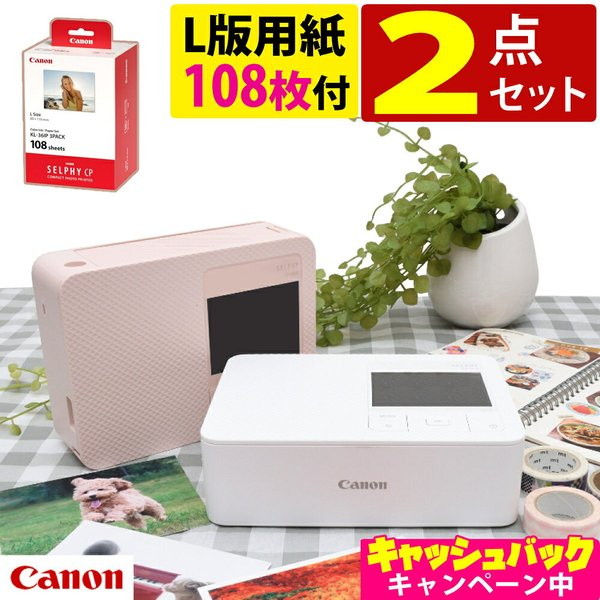
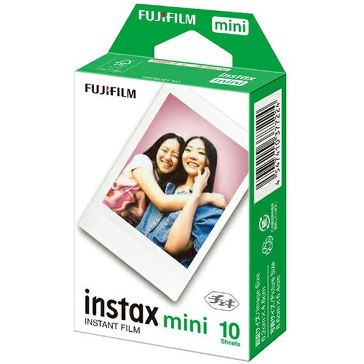
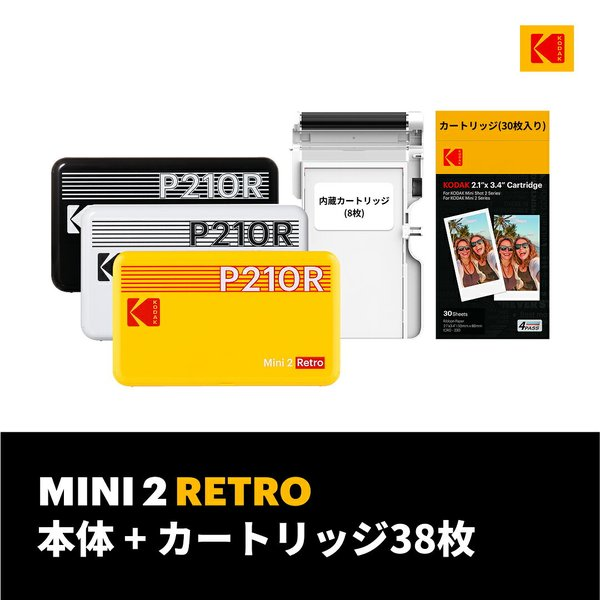
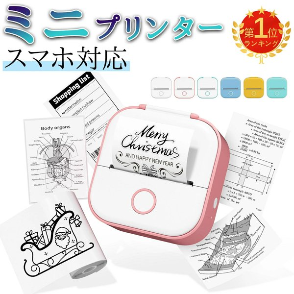
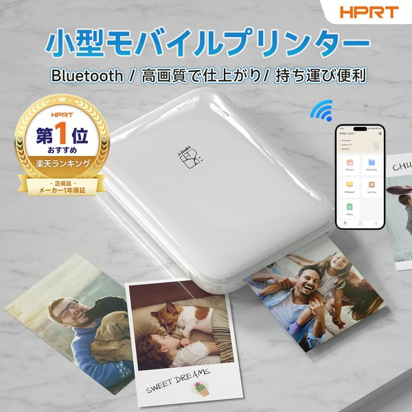
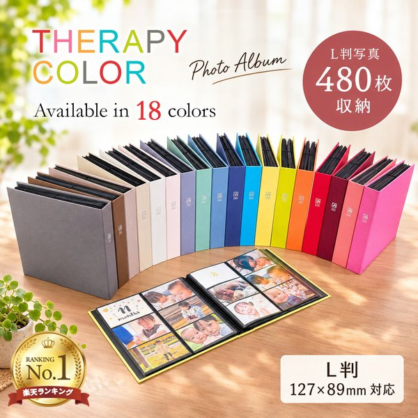
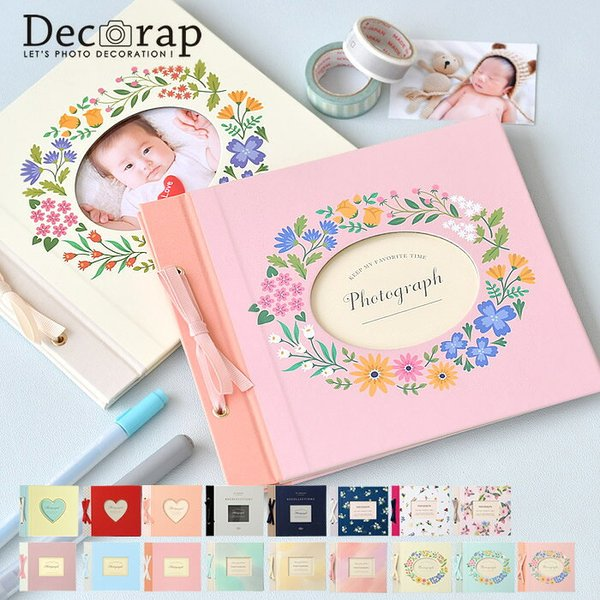
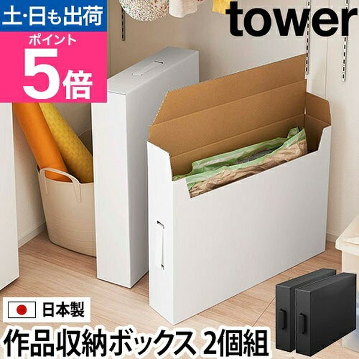
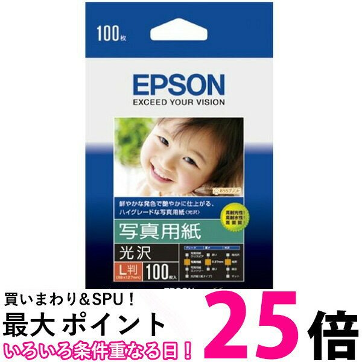
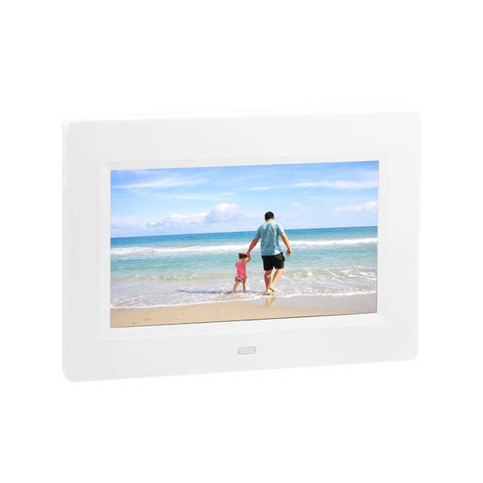

【2026年・写真整理10選】キヤノン SELPHY CP1500・チェキフィルム・KODAK Mini 2 Retro・Phomemo T02・HPRT MT53・ナカバヤシ アルバム・マークス デコラップ・山崎実業 メモリアルボックス・エプソン写真用紙・ITPROTECH デジタルフォトフレームを実売価格で比較
スマホの中に写真が溜まっていく一方で、見返す時間は減っていきます。印刷して壁に貼る、アルバムにまとめる、フレームに流す。形にすると、写真は自然に目に入るようになります。
選ぶ軸は3つです。「まず印刷の方式」。昇華型は色がきれいで長持ちし、ZINKやサーマルはインクが要らず手軽です。「次に残し方」。ポケットアルバムは手間がかからず、貼るタイプは寄せ書きや飾り付けに向きます。「最後に見せる場所」。デジタルフォトフレームは電源を入れるだけで流れ、来客の目にも入ります。なお、レビュー件数が50件に満たない商品は記事内に実数を明記しています。
本記事では、楽天市場で人気・高評価の写真プリンターとアルバム・収納グッズ10選を、実売価格とレビュー評価つきで写真付き紹介します。
- おすすめ10選 スペック・特徴比較表
- BEST 1｜キヤノン SELPHY CP1500 コンパクトフォトプリンター
- BEST 2｜富士フイルム チェキ instax mini用フィルム 10枚入り
- BEST 3｜コダック Mini 2 Retro 4PASS ポータブルフォトプリンター（カートリッジ38枚付き）
- BEST 4｜Phomemo T02 ミニサーマルプリンター（スマホ対応）
- BEST 5｜HPRT MT53 ミニフォトプリンター（スマホ対応）
- BEST 6｜ナカバヤシ セラピーカラー 6面ポケットアルバム L判 480枚収納
- BEST 7｜マークス デコラップアルバム（貼るタイプ）
- BEST 8｜山崎実業 tower 作品収納ボックス メモリアルボックス 2個組
- BEST 9｜エプソン 写真用紙 光沢 L判 100枚（KL100PSKR）
- BEST 10｜ITPROTECH 7型デジタルフォトフレーム IPT-DF70S-WH
- 【読者負担0円】買わなくても得する無料サービス
- まとめ：写真プリント・整理10選の選び方
| 順位 | 商品名 | ブランド | 最大の特徴・おすすめ理由 | 総合評価 |
|---|---|---|---|---|
| BEST 1 | キヤノン SELPHY CP1500 コンパクトフォトプリンター | キヤノン（Canon） | スマホから直接印刷できる | 4.76 |
| BEST 2 | 富士フイルム チェキ instax mini用フィルム 10枚入り | 富士フイルム（FUJIFILM） | 1箱10枚入り | 4.74 |
| BEST 3 | コダック Mini 2 Retro 4PASS ポータブルフォトプリンター（カートリッジ38枚付き） | KODAK（コダック） | 4PASS方式で長持ちする | 4.37 |
| BEST 4 | Phomemo T02 ミニサーマルプリンター（スマホ対応） | Phomemo | インク不要で維持費が安い | 4.41 |
| BEST 5 | HPRT MT53 ミニフォトプリンター（スマホ対応） | HPRT | スマホから印刷できる | 4.55 |
| BEST 6 | ナカバヤシ セラピーカラー 6面ポケットアルバム L判 480枚収納 | ナカバヤシ | L判を480枚収納できる | 4.66 |
| BEST 7 | マークス デコラップアルバム（貼るタイプ） | マークス（MARK'S） | 貼って飾れる台紙 | 4.56 |
| BEST 8 | 山崎実業 tower 作品収納ボックス メモリアルボックス 2個組 | 山崎実業（tower） | 作品と写真をまとめて収納 | 4.18 |
| BEST 9 | エプソン 写真用紙 光沢 L判 100枚（KL100PSKR） | エプソン（EPSON） | 純正紙で発色が安定 | 4.58 |
| BEST 10 | ITPROTECH 7型デジタルフォトフレーム IPT-DF70S-WH | ITPROTECH（アイティプロテック） | 電源を入れるだけで表示 | 3.50 |
キヤノン SELPHY CP1500 コンパクトフォトプリンター

キヤノンのSELPHY CP1500は、スマホから送った写真をL判で印刷できるコンパクトなフォトプリンターです。昇華型の印刷で、肌の色がなめらかに出ます。インクと用紙が一体になったカートリッジを使うので、インク残量を気にせず印刷できます。楽天市場での実売価格は約29,300円（2026年11月時点）。
- スマホから直接印刷できる
- 昇華型で肌色がきれい
- レビュー143件の人気機
- 本体価格と用紙代は、インク不要の方式より高め
富士フイルム チェキ instax mini用フィルム 10枚入り

富士フイルムのinstax mini用フィルムは、チェキのカメラやスマホプリンターに装填して使う専用フィルムです。撮ったあと1枚ずつ現像が進み、その場で写真が手に入ります。パーティーや年賀の記念に、その場で配るのにも向いています。楽天市場での実売価格は約1,520円（2026年11月時点）。
- 1箱10枚入り
- 現像がその場で進む
- レビュー305件の定番
- 1枚あたりの単価は、ネットのプリントサービスより高い
コダック Mini 2 Retro 4PASS ポータブルフォトプリンター（カートリッジ38枚付き）

コダックのMini 2 Retroは、スマホとBluetoothでつないで印刷するポータブルプリンターです。4PASS方式で色を重ね、最後に保護層を重ねるので、指紋や水に強い写真になります。カートリッジ38枚分が付属し、届いた日から印刷できます。楽天市場での実売価格は約15,900円（2026年11月時点）。
- 4PASS方式で長持ちする
- カートリッジ38枚分付属
- レビュー54件の実売モデル
- 専用カートリッジしか使えない
Phomemo T02 ミニサーマルプリンター（スマホ対応）

PhomemoのT02は、手のひらに収まるサーマルプリンターです。インクを使わず、熱で感熱紙に印刷する仕組みで、メモやラベル、写真風のプリントまでスマホから送れます。Bluetoothでつなぐだけで使えます。楽天市場での実売価格は約3,909円（2026年11月時点）。
- インク不要で維持費が安い
- 手のひらサイズで持ち歩ける
- レビュー655件の人気機
- 感熱紙なので色は出ず、長期の保存には向かない
HPRT MT53 ミニフォトプリンター（スマホ対応）

HPRTのMT53は、スマホ対応の小型フォトプリンターです。専用の写真用紙に印刷する方式で、Bluetoothでつないで写真を送ります。本体に写真用紙5枚が付属し、追加の用紙を選んで買えます。楽天市場での実売価格は約12,080円（2026年11月時点）。
- スマホから印刷できる
- 写真用紙が付属
- レビュー31件の実売モデル
- レビュー31件と少なく、専用の用紙とサイズしか使えない
ナカバヤシ セラピーカラー 6面ポケットアルバム L判 480枚収納

ナカバヤシのセラピーカラーは、1ページに6枚、L判を480枚まで収められるポケットアルバムです。18色のカラーから選べ、背表紙にタイトルを書き込めます。年ごとに色を変えて並べると、棚から取り出すときに見分けやすくなります。楽天市場での実売価格は約2,500円（2026年11月時点）。
- L判を480枚収納できる
- 18色から選べる
- レビュー1,616件の定番
- 冊子が厚くなるので、収納する場所を決めてから買う
マークス デコラップアルバム（貼るタイプ）

マークスのデコラップアルバムは、台紙に写真を貼って作る手作りアルバムです。マスキングテープやシールで飾れ、寄せ書きのページにも使えます。出産や結婚式の記念を1冊にまとめたいときに選ばれています。楽天市場での実売価格は約2,420円（2026年11月時点）。
- 貼って飾れる台紙
- 寄せ書きにも使える
- レビュー160件の実売モデル
- ポケットアルバムより、写真を整理する手間がかかる
山崎実業 tower 作品収納ボックス メモリアルボックス 2個組

山崎実業のメモリアルボックスは、子どもの作品や写真、絵本をまとめて収める収納ボックスです。A4の画用紙が入る大きさで、前面が開くので出し入れが楽です。白い仕上げで、リビングの棚に置いても馴染みます。楽天市場での実売価格は約3,520円（2026年11月時点）。
- 作品と写真をまとめて収納
- A4が入る大きさ
- レビュー323件の定番
- 紙製なので、湿気の多い場所には向かない
エプソン 写真用紙 光沢 L判 100枚（KL100PSKR）

エプソンの写真用紙 光沢は、インクジェットプリンターで写真を印刷するときの専用紙です。光沢のある仕上げで、L判100枚入り。エプソン製プリンターの発色に合わせて作られているので、家族の写真をまとめて印刷するときに色が安定します。楽天市場での実売価格は約1,464円（2026年11月時点）。
- 純正紙で発色が安定
- L判100枚入り
- レビュー24件の実売モデル
- レビュー24件と少なく、エプソン以外のプリンターでは色味が変わる
ITPROTECH 7型デジタルフォトフレーム IPT-DF70S-WH

アイティプロテックの7型デジタルフォトフレームは、SDカードやUSBメモリの写真を読み込んでスライドショーで表示します。卓上に置ける大きさで、電源を入れるだけで写真が流れます。スマホから無線で送る機能はなく、カードに移して使うタイプです。楽天市場での実売価格は約4,840円（2026年11月時点）。
- 電源を入れるだけで表示
- SDカードとUSBメモリに対応
- レビュー2件の実売モデル
- レビュー2件と少なく、スマホから無線で送ることはできない
この記事の商品を買う前に、まずは無料で得する選択肢をチェック。どれも登録・利用は0円で、無料期間中に解約すれば料金はかかりません。読みたい雑誌がある人、ポイントを貯めたい人、アンケートなら気軽という人、それぞれに合うものを選べます。
初回31日無料・無料期間中に解約すれば0円 → 楽天ポイントモール｜登録無料で毎日ポイ活
買い物なしでもポイントが貯まる無料サービス → 楽天インサイト｜アンケートに答えてポイント
登録無料・すきま時間のアンケートで貯まる → 楽天カード｜年会費永年無料
新規発行・年会費ずっと0円 →
4つのサービスの違いと使い分けは「出費0円で得する！買わずにポイントが貯まる無料サービス厳選4選」でまとめています。
💡 まとめ：写真プリント・整理10選の選び方
写真を形にすると、見返す回数がはっきり増えます。家で印刷するならキヤノン SELPHY CP1500、手軽に小さく刷るならKODAK Mini 2 Retro、Phomemo T02、HPRT MT53、チェキで撮るなら富士フイルムのinstax mini用フィルムです。残す側は、L判を480枚収められるナカバヤシのセラピーカラー、飾って作るマークスのデコラップアルバム、作品ごと収める山崎実業のメモリアルボックス。印刷の用紙はエプソンの写真用紙、見せる場所にはITPROTECHのデジタルフォトフレームがあります。まずは1台プリンターを決めて、写真を1か所に集めるところから始めると、整理は進みます。
楽天市場では「5と0のつく日」や「お買い物マラソン」などのキャンペーンに合わせて購入すると、ポイント還元が最大化してお得に手に入ります。ぜひチェックしてみてくださいね。